一切的数字的本质都是算式．如果我们把这些数字都变成代数算式，它们又分别对应什么呢？整数对应的是整式，分数对应的是分式，因此无理数对应的就是无理式．因为无理式常常是要开根号的，所以又被叫作根式．我们现在就来谈一谈根式的运算法则．
什么叫作根式？根式就是一个根号里套着一个式子．像
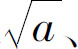
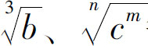
等都是根式．如果是a 的平方再开方，就不能直接等于a ，而是要根据a 的正负去判断结果的正负，这就是根式的基本运算法则．按照这个法则，完整的计算过程为：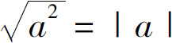
．当a ≥0时，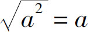
；当a ＜0时，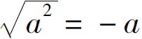
．接下来我们再来看看根式的平方运算：如果我们把上述计算过程颠倒一下，把
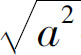
换成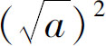
，结果又应该等于多少呢？我们不妨先考虑一下： 就相当于求a 是谁的平方，如果我们求出来结果等于b ，那么这个b 的平方就是a ．比如，9开平方是3，3再平方是9．那么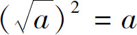
，是否还要分正、负两种情况讨论呢？这里就有一个“潜规则”了，这个规则就是题目中给出的算式默认都是有意义的，也就是说，既然题目给了我们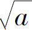
这个表达式，那就说明这个算式一定是有意义的，也就是说根号里的a 不可能是负数．因此，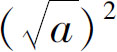
的结果就是a ，无须讨论a 的正负．接下来，我们再研究一种运算规则，那就是多层根号的情况．例如
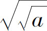
，这就等于a 开方以后再次开方，那么它的结果又是多少呢？我们知道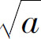
可以用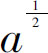
表示，因此，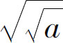
就可以表示为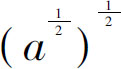
，根据幂的乘方公式，我们需要保持底数不变，把两个指数相乘，于是得到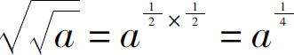
，a 的1／4次方用根号形式表示可以写为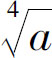
．同理，如果我们用任意次的开方运算代替二次根式，就会发现：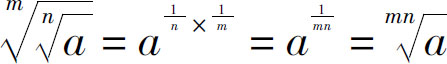
．接下来，我们继续分析根式的乘除运算．例如：
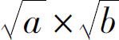
等于多少呢？我们仍然把根号形式调整为指数形式：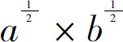
，该式符合同指数幂相乘，底数相乘，指数不变，得到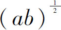
，再把指数形式调整为根号形式表达，得出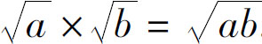
．于是，我们知道，同次数的根式相乘，等于根式内的被开方数相乘以后再开方．那么，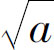
除以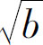
呢？很简单，幂的商等于商的幂，肯定也是等于根号里边的a 除以b 了．证明过程如下：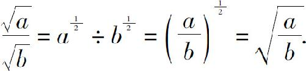
回顾一下根式的乘除运算：两根式相乘，等于两式相乘以后再开方；两根式相除，等于两个式子相除以后再开方．明白了上述规则以后，我们就可以进行根式化简了．但是，我们要把根式化简到什么程度为止呢？化简到最简根式为止．最简根式有三个标准：第一，要把能开根号的字母或者数字全部都开根号出来；第二，要保证根号里头没有小数和分数；第三，如果结果是个分式，要保证分母的部分没有根式．这样的要求是不是有点苛刻？
我们从一个最简单的问题开始分析：
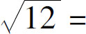
？我们一看12不能开平方，是不是不能化简了呢？不对，我们必须要把根号里的12拆成几个数的乘积，把它拆成2×2×3以后，找找这几个因数，有没有能当作平方数给拆出去的，我们一看2×2＝4，这4是可以开平方的，所以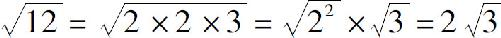
．接下来我们再看个分数的问题：
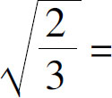
？这个算式的根号里头有分母，我们怎么把它去掉呢？好办，它不是分数吗，我们把分子分母同时乘以一个数，把分母变成一个平方数．3乘以什么能变成平方数呢？可以乘以3，分子、分母都乘以3，这样就可以进一步简化了，按此思路得到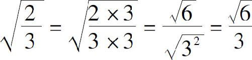
．现在这个根号里头没有分母了，分母里头也没有根号了，符合最简根式的要求，因此它就是最后的解．最后我们再来处理一个问题：化简
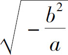
，其中b ＜0．在此题中，根号里有个负号，我们曾经反复提到根号里不能是负数，那这个根号里头为什么有个负号呢？我们分析一下：b 虽然是负数，但是b 经过平方以后，那肯定就是正数了；要想让这个根式有意义，只有a 是负数时，根号里面的内容才可能大于等于0，这个根式才可能成立．因此，我们就得到了a 的取值范围是a ＜0．接下来，我们先把分子分母的部分独立拆分出来，得到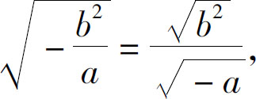
再把分子开根号出来，得到｜b ｜，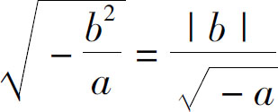
，因为b ＜0，所以原式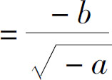
，为了消去分母上的根号，需要在分子分母上同时乘以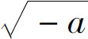
，得到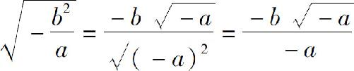
，消去分子分母的负号，得到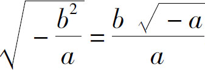
．